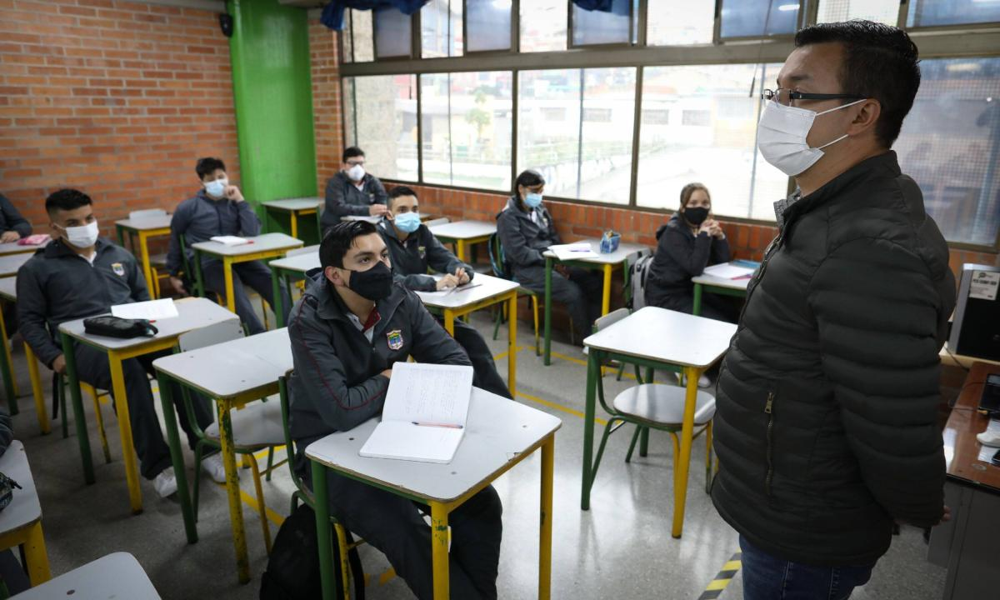

Porque nuestra misión es contigo, conoce lo primero en noticias locales y a
nivel mundial
Política
‘El país no sabe hacia dónde va en materia de seguridad’: Fiscal
En los últimos días se ha registrado una ola de inseguridad en todo el país,
denunciada por la ciudadanía. ¿Qué opina de esto, Fiscal, qué se debe hacer
a nivel institucional? La política de prevención y seguridad corresponde al
Gobierno Nacional. Para mí es claro que el país no sabe hacia dónde va en
esta materia. Lo he señalado muchas veces: la Fiscalía llega una vez los
delitos se cometen, investiga y ejerce la acción penal. Es decir, tenemos
solo una pequeña parte, que tampoco podemos hacer solos.
Internacional
¿EE. UU. va a regular la inteligencia artificial? Biden habla con gigantes
tecnológicos
"Veremos más cambios tecnológicos en los próximos 10 años o incluso en los
próximos pocos años de los que hemos visto en los últimos 50 años. Para mí
ha sido una revelación asombrosa", declaró. "El grupo que está aquí será
fundamental para guiar esa innovación con responsabilidad y seguridad"
Educación
En qué consiste realmente el grado 12º en colegios que propone el Gobierno

Según los expertos, este nuevo grado mejora las condiciones de los jóvenes
para tomar decisiones al proporcionarles conocimientos y habilidades en
diversas disciplinas, fomentar el pensamiento crítico, ofrecer orientación
vocacional, brindar experiencias prácticas y promover la madurez y
autonomía. Estas oportunidades les permiten comprender mejor el mundo,
evaluar información, considerar diferentes perspectivas, explorar sus
intereses profesionales, aplicar conocimientos en situaciones reales y
desarrollar confianza al asumir responsabilidad por sus decisiones.
Tecnología
4 rasgos exclusivos de los humanos que resultan imposibles para la
inteligencia artificial
Economía
Dólar en Colombia termina la semana a la baja y sobre niveles de los 3.971
pesos
Astronomía
Un telescopio capta el enjambre de rocas que dejó un choque de la NASA en
el espacio